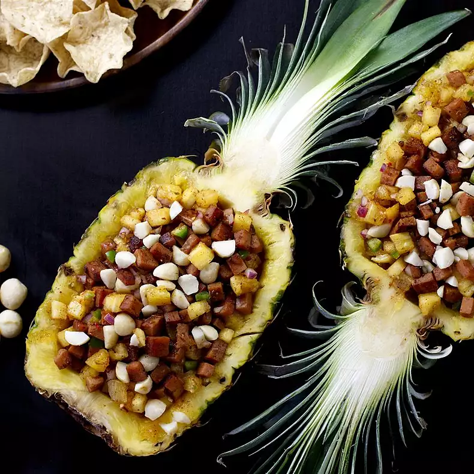

Hawaiian Ham and Pineapple Salsa

Description
Get party-ready with our Hawaiian Ham and Pineapple Salsa.
A fruity salsa of pineapple, jalapeño and mango nectar is the perfect base for salty chunks of cooked canned ham seasoned with Grill Mates® Baja Citrus Marinade.
Serve it inside hollowed out pineapple bowls for a festive touch
Ingredients
- 1 (1 ounce) package McCormick® Grill Mates® Baja Citrus Marinade
- ½ cup mango nectar or orange juice
- 2 tablespoons honey
- 2 tablespoons lime juice
- 1 (12 ounce) can canned ham, such as Spam® Classic, cut into small cubes
- 4 cups finely chopped fresh pineapple
- ½ cup finely chopped red onion
- 1 jalapeño pepper, finely chopped
- ½ cup chopped macadamia nuts
Directions
- Mix Marinade Mix, mango nectar, honey and lime juice in large bowl. Remove 1/4 cup of the marinade mixture; set aside.
- Cook cubed canned ham and 1/4 cup of the reserved marinade mixture in large skillet on medium heat until lightly browned. Remove from heat.
- Stir pineapple, onion and jalapeno into remaining marinade mixture in large bowl until well blended. Top with ham mixture. Sprinkle with nuts. Serve dip with tortilla chips.